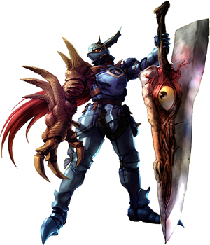

He is the evil ruler of a "Dream Dimension", where tormented humans are brought during their sleep. He roams this realm on his demonic black horned horse named Dreamstalker. He appears as a chalk-white man with wild green hair, a green bodysuit, and a ragged cape. He was the first foe met by Doctor Strange when a man who was having troubling dreams went to Strange for help, though it is revealed this is due to him committing a murder. Later Nightmare imprisons several humans in his dimension, but Strange frees them. When Doctor Strange forgot to recite a spell before he slept, Nightmare started tormenting him, before Strange was freed after tricking Nightmare by casting an illusion of one of Nightmare's enemies
 GoBack